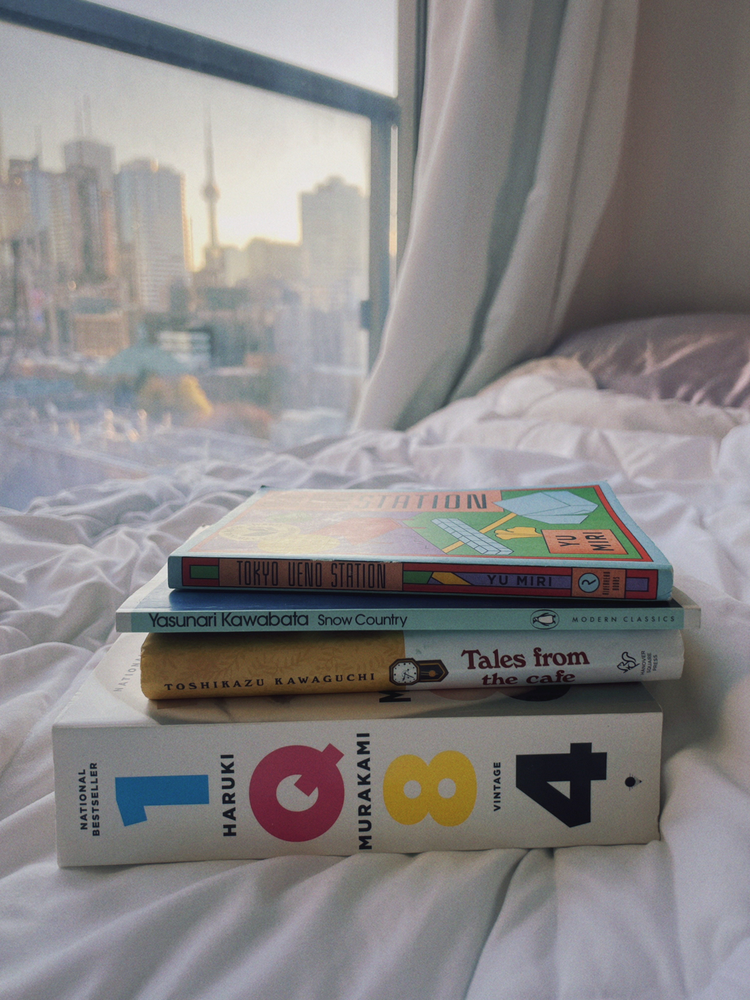
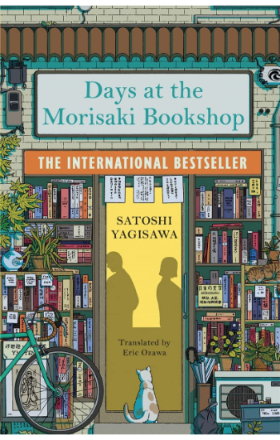

Paper Crane Pages

Articles

Novels to start 2025 off by.
Rachel Chen
It’s the start of a brand new year and with it comes fresh goals, new intentions, and of course, updated reading resolutions. For me, reading has always been a form of gentle escapism. It’s a way to step outside of daily life and slip into other worlds where some are soft and quiet, others strange and expansive. Japanese literature, in particular, has offered a kind of comfort I didn’t expect. These stories are often cozy and introspective which are perfect for those looking to read more mindfully in 2025.
Reading has also helped stretch my imagination and sharpen my creative writing skills. The beauty of it lies in its ability to immerse you in so many different ways of life, cultural nuances, and emotional truths. And while 2024 was full of its own challenges and changes, it was also filled with beautiful reads that stayed with me long after the final page.
Here are a few books I read this past year that I think make perfect companions to start 2025 off by:

The Art of Novellas.
Sam Simner
In a world where novels often span hundreds of pages and epics dominate bestseller lists, the novella holds a quieter, more delicate power. Defined by its brevity and precision, the novella is a form that thrives on what is unsaid as much as what is written. In Japanese literature this form has been offering compact stories that carry emotional depth beauty and enduring impact.
Japanese novellas often echo the aesthetics of simplicity. Authors like Yasunari Kawabata and Hiromi Kawakami use the novella to explore intimate human moments, fleeting connections, and quiet revelations. Their stories don’t shout; they whisper. They invite readers to slow down, to pay attention to small gestures, silences, and the shifting emotions beneath the surface.
Take Kawabata’s Snow Country, for example a story sparse in language but rich in mood or Kawakami’s The Nakano Thrift Shop, which uses a string of seemingly mundane interactions to unravel a deeper sense of longing. These novellas avoid dramatic plots and instead focus on atmosphere, memory, and introspection.
In Japanese literature, the novella isn’t just a shorter novel it’s a distinct art form. It captures a single season of a character’s life, a passing encounter, or an unresolved feeling. For readers looking for stories that are contemplative, poignant, and beautifully compact, the Japanese novella is a perfect place to begin.